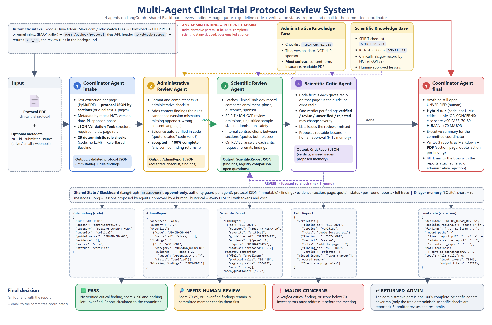

BIU DS23 Final Project
Team: Amir Shmaryahu and Ron Levi
Date: 18 October 2026 | Version: 1.2 (updated after Checkpoint 1 implementation; supersedes v1.1 of 13 October 2026)
Repository: github.com/AS-ai25/ProtocolReviewAI (private)
Helsinki (IRB / ethics) committee coordinators and professional committee members review complex clinical trial protocols before committee deliberation. The review has two distinct parts: an administrative check (is the submission complete, correctly formatted, with every required document and section?) and a scientific check (is the methodology sound, internally consistent, and aligned with the trial registry and with SPIRIT / ICH-GCP expectations?). The process is time-consuming and vulnerable to missed findings and human error.
The system supports, but does not replace, professional committee review. Its users are the committee coordinator ("the boss"), who receives every result by email, and committee members, who receive reports in which every finding is traceable to a page, a quote and a guideline item.
The system is evaluated on a labeled test set that includes ordinary cases, conflicting information, and cases without a valid resolution.
Targets (planned, not yet measured on real protocols):
Baselines. Two baselines are implemented in the same repository and emit the same finding format and decision vocabulary as the multi-agent system:
Metrics. Precision, recall and F1 on findings; runtime; cost (tokens per protocol); and the separate contribution of the critic (findings rejected or downgraded by the critic, and how many of those were indeed wrong).
Lessons from the first live comparison (16 October 2026, synthetic cases only). Matching findings by exact category string is too coarse: the LLM uses generic categories where the rules use specific ones, and many "extra" LLM findings were real but unlabeled. Before Checkpoint 2 the evaluation will (a) match findings on meaning (category alias map or guideline reference + page), (b) score verified findings as the system's claims and count unverified ones separately, and (c) label real protocols with all defensible findings, including those only an LLM can see.
Sources. Publicly available English-language clinical trial protocol PDFs and structured study metadata from ClinicalTrials.gov (API v2), retrieved by NCT ID.
Planned scope. 10 to 15 initial protocols divided between development and evaluation; a labeled set of findings including documented synthetic test scenarios. Two synthetic protocols (one complete, one with ten documented injected deficiencies) already exist for development and tests.
Knowledge base. SPIRIT checklist, ICH-GCP E6(R3) key points, and an administrative intake checklist (15 items, ADMIN-CHK-01 to 15). The current files are working drafts compiled by the team; Ron verifies them against SPIRIT 2025 and the committee's official SOP before Checkpoint 2.
Availability and permissions. PDF availability and terms of use are checked per document. Source access is recorded with a link, study ID and document version. This verification is not yet complete.
Fallback. If suitable documents are insufficient, use publicly accessible protocols from PubMed Central and guideline-based synthetic cases, limiting evaluation to verifiable findings.

The system has four agents on LangGraph with a shared state ("Blackboard"):
| # | Agent | Role | Output |
|---|---|---|---|
| 1 | Coordinator | Single point of contact between the human coordinator and the agents. Intake: extracts text per page, regex metadata (NCT ID, version, date, PI, sponsor, phase) and runs the 29 deterministic checks. Final: takes the decision, writes the executive summary and three reports, emails the boss. | ReviewState, FinalSummary, reports, email |
| 2 | Administrative Review Agent | Checks format and completeness against the administrative checklist and the human-approved lessons in memory; adds context findings the rules cannot see (version mismatch between pages, appendix referenced but missing, consent form in the wrong language). Evidence is verified in code. | AdminReport (accepted, checklist, findings) |
| 3 | Scientific Review Agent | Fetches the ClinicalTrials.gov record and compares it with the protocol; reviews against SPIRIT / ICH-GCP; detects internal contradictions between sections. On a revision request it answers each critic point and re-emits its findings. | ScientificReport (findings, registry comparison, open questions) |
| 4 | Scientific Critic Agent | Audits every reviewer finding. Code first (is the quote on that page? is the guideline code real?), then one verdict per finding: verified / revise / unverified / rejected, with optional severity change. Lists issues the reviewer missed. Proposes reusable lessons for human approval. | CriticReport (verdicts, missed issues, proposed memory) |
Flow. PDF arrives (Google Drive or email automation → FastAPI webhook, or IMAP poller) → Coordinator intake → Administrative Review. If the administrative part is not 100% complete, the Coordinator finalizes immediately (decision RETURNED_ADMIN) and emails the boss; the scientific agents do not run. Otherwise Scientific Review → Scientific Critic, with at most one focused revision round, → Coordinator final → reports → email. The boss receives an email in every case.
Design change from v1.1. v1.1 listed a fifth agent, an Administrative Critic. The team decided to keep four agents: administrative completeness is a technical check, and automatic evidence verification in code (quote located in the PDF, guideline code valid) is deterministic, free and sufficient for it. An LLM critic is kept only for the scientific part, where judgement is needed.
Shared State / Blackboard. Findings with evidence (page + verbatim quote), guideline reference, severity, status and critic notes; agent reports; revision requests; full trace of agent actions and decisions. Persisted per run (SQLite).
Three-layer memory.
Outputs. PASS (report circulated to the committee), NEEDS_HUMAN_REVIEW (unverified findings remain; a committee member checks them first), MAJOR_CONCERNS (verified critical or major scientific findings; investigators must address them before the meeting), RETURNED_ADMIN (administrative part incomplete; submitter revises and resubmits). Every outcome ends with the reports and an email to the committee coordinator.
Administrative rule (decided). The administrative part must be 100% complete. Any verified administrative finding, critical, major or minor, is written to the report and the submission is returned (RETURNED_ADMIN). Only informational notes let a submission through. The most serious items (consent form, insurance / indemnity, readable complete PDF) are listed first.
Scientific rule (current, pending team decision). Today: any verified critical or major scientific finding → MAJOR_CONCERNS; otherwise, if unverified findings remain → NEEDS_HUMAN_REVIEW; otherwise PASS. Three options are under discussion with Ron:
Derived score (display only). 100 minus 25 per verified critical, 10 per verified major, 3 per verified minor finding, floored at 0. Unverified findings are not counted but shown as pending human review; every deduction is listed by finding ID. The score summarises the findings and allows comparison between protocols; under rule (a) it never drives the decision.
Decisions beyond ordinary code. Agents interpret protocol meaning, detect inconsistencies across sections, and determine context-dependent checks. The Coordinator routes and bounds re-checks. The Scientific Critic verifies evidence and challenges insufficiently supported conclusions. Deterministic checks remain in code.
Tools. PyMuPDF for text extraction; regex metadata; 29 deterministic checks (administrative 14, scientific 12, registry 3); ClinicalTrials.gov API v2 client; knowledge-base loader with keyword retrieval; fuzzy quote verifier; Anthropic SDK with structured outputs (every agent returns a validated schema); LangGraph for state, handoffs and conditional routing; FastAPI webhooks; SMTP; SQLite.
Failure handling. Invalid structured output is retried once with the error; model refusals are handled with server-side fallbacks; an LLM failure degrades to deterministic results and is listed in the report; a finding whose quote is not located in the PDF is never verified, whatever the critic says; the revision loop is bounded; anything still open at finalisation becomes UNVERIFIED and goes to a human; a full trace is kept.
If only two weeks remain: limit to three administrative and three scientific checks on fewer protocols, keep the four-agent architecture with one re-check round, defer knowledge-base expansion, email intake and interface work; retain findings reporting, both baselines and basic evaluation.
| Date | Milestone and expected deliverable | Status |
|---|---|---|
| 4 Oct 2026 | Project Charter v1.0: problem, architecture, data, metrics, baselines. | done |
| 13 Oct 2026 | Charter v1.1 (editorial revision). | done |
| 18 Oct 2026 | Checkpoint 1: end-to-end pipeline (intake, extraction, checks, reports, email), Rule-Based Baseline; in addition the full four-agent workflow, Single-Agent Baseline, evaluation harness, 21 automated tests, first live runs. Charter v1.2. | done |
| 30 Oct 2026 | Checkpoint 2: verified knowledge base, real public protocols, labeled finding set, scientific decision rule decided and implemented, improved matching metric, one-minute recorded demo. | planned |
| 1 Nov 2026 | Pre-mentoring submission: freeze the repository, draft presentation. | planned |
| 4 Nov 2026 | Mentoring session: working system, preliminary results, feedback, gaps. | planned |
| 12 Nov 2026 | Final submission: evaluation versus both baselines, README, documented results, presentation. | planned |
| 15 / 18 Nov 2026 | Project presentation: demonstration, metrics, justification of the multi-agent design. | planned |
Ron — Product & Data: requirements and use cases; sourcing and verifying documents; verifying the knowledge base (SPIRIT 2025, ICH-GCP, committee SOP); preparing labeled cases; defining success metrics; assessing finding quality.
Amir — Agent & Model: agent architecture and tools; state and handoffs; baseline implementations; guardrails; evaluation runs.
Shared: integration, system testing, results analysis, code documentation, final presentation.
| Area | v1.1 | v1.2 |
|---|---|---|
| Agents | five (incl. Administrative Critic) | four; administrative evidence verified in code |
| Administrative rule | not specified | 100% complete or RETURNED_ADMIN |
| Scientific rule | PASS / REVISE / UNVERIFIED | PASS / NEEDS_HUMAN_REVIEW / MAJOR_CONCERNS; cutoff rule pending (options a / b / c) |
| Score | none | derived, display-only score next to the decision |
| Baselines | planned | both implemented in the repository |
| Memory | not specified | three-layer memory with human-in-the-loop approval |
| Intake / output | not specified | Drive / email automation → webhook; reports + email to the coordinator in every case |
| Evaluation | F1 vs baselines | plus verified-only precision, critic contribution, semantic matching |